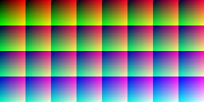
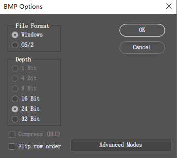

简介
简单来说就是颜色查找表,以颜色值作为3D纹理的纹理坐标,利用插值与色阶实现全色映射
相比HSV调色等具有更强的表现力,可由美术进行色彩,对比度,亮暗等等方面的控制
适用场合
- 用于做后处理,改变场景的风格
- 换肤等
算法描述
以像素值作为纹理坐标采样3D纹理得到最终的颜色值
1
2
3
4
5
6
7
8
9
10
11
12
13
| Texture2D origTexture : register(t0);
SamplerState origSampler : register(s0);
Texture3D lutTexture : register(t1);
SamplerState lutSampler : register(s1);
float4 ps_main(PixelIn input) : SV_TARGET
{
float4 color = origTexture.Sample(origSampler, input.texcoord);
color.rgb = lutTexture.Sample(lutSampler, input.texcoord).rgb;
return color;
}
|
资源要求
当以R8G8B8A8来存储LUT的话,$256\times 256\times 256$的查找表大小为64M.
因此,通常是将其划分为32阶,也就是尺寸为$32\times 32\times 32$.大小为128k,实际应用中精度足够,内存占用也不大
资源制作
原始色阶
首先制作一张原始色阶图,下图为256*128的原始色阶图,包含32阶的所有颜色值

生成算法如下:
1
2
3
4
5
6
7
8
9
10
11
12
13
14
15
16
17
18
19
20
21
22
23
24
| void generate_pixels(color* pixels, const bitmap_info& info, int size, int downscale_shift)
{
int blue_stride = info.width / size;
for (int row = 0; row < info.height; row++)
{
int g = row % size;
int offset = (int)(row / size) * blue_stride;
for (int col = 0; col < info.width; col++)
{
int r = col % size;
int b = offset + col / size;
auto& c = pixels[row * info.width + col];
c.r = r << downscale_shift;
c.g = g << downscale_shift;
c.b = b << downscale_shift;
}
}
}
|
调节图像
假设原图为A,希望将其变换为B.首先将原始色阶图置于图像右下角,另存为src.bmp

然后开始P图,直到满意为止,针对图像的个别区域P图无意义,需要应用到全图.如下:

将P好的图像另存为dst.bmp
接下来通过两张图像右下角的色阶图来提取LUT.
LUT生成
- 从
src.bmp和dst.bmp提取右下角色阶区域的像素值
- 以
src.bmp的颜色值计算LUT的索引,dst.bmp对应处的颜色值作为LUT的值
- 填充3D纹理
1
2
3
4
5
6
7
8
9
10
11
12
13
14
15
16
17
18
19
20
21
22
23
24
25
26
27
28
29
30
31
32
33
34
35
36
37
38
39
40
41
42
43
44
45
46
47
48
49
50
51
52
53
54
55
56
57
58
59
60
61
62
63
64
65
66
67
68
69
70
71
72
73
74
75
76
77
78
79
80
81
82
83
84
85
|
struct accColor
{
unsigned int r = 0;
unsigned int g = 0;
unsigned int b = 0;
};
struct color
{
unsigned char r = 0;
unsigned char g = 0;
unsigned char b = 0;
unsigned char a = 255;
};
void lut_set(const color& src_color, const color& dst_color, int size, accColor* lut, int* acc_count, int downscale_shift)
{
int index = (src_color.b >> downscale_shift) * size * size + (src_color.g >> downscale_shift) * size + (src_color.r >> downscale_shift);
accColor& pixel = lut[index];
pixel.r += dst_color.r;
pixel.g += dst_color.g;
pixel.b += dst_color.b;
acc_count[index]++;
}
bool average_lut(const accColor* acc_pixels, color* lut_pixels, const int* acc_count, int total_size)
{
bool all_valid = true;
for (int i = 0; i < total_size; i++)
{
if (acc_count[i] > 0)
{
lut_pixels[i].r = acc_pixels[i].r / acc_count[i];
lut_pixels[i].g = acc_pixels[i].g / acc_count[i];
lut_pixels[i].b = acc_pixels[i].b / acc_count[i];
}
else
{
all_valid = false;
break;
}
}
return all_valid;
}
bool lut_generate(const char* src_filename, const char* dst_filename, const char* lut_filename, int size)
{
...
int total_size = size * size * size;
accColor* acc_pixels = new accColor[total_size];
int* acc_count = new int[total_size];
memset(acc_count, 0, total_size * sizeof(int));
for (int irow = row_offset; irow < src_info.height; irow++)
{
for (int icol = col_offset; icol < src_info.width; icol++)
{
const color& src_color = src_pixels[irow* src_info.width + icol];
const color& dst_color = dst_pixels[irow* src_info.width + icol];
lut_set(src_color, dst_color, size, acc_pixels, acc_count, right_shift);
}
}
color* lut_pixels = new color[total_size];
if (!average_lut(acc_pixels, lut_pixels, acc_count, total_size)) return false;
write_dds(lut_filename, lut_pixels, size);
...
return true;
}
|
src用于计算3维数组的索引值,dst提供3维数组的数据
之所以添加accColor这个结构是因为当原始色阶图颜色数超出$size^3$时,会有多个颜色映射到3维数组的同一个元素,此时需要先累加再求平均
当然,如果使用前面给出的色阶图或者按照提供的算法生成不会出现此情况
注意事项
生成查找表纹理时,输入源必须是未压缩的,保证$32\times 32 \times 32$每个元素都能填充值
3D查找纹理不需要生成MipMap
采用双线性采样,即D3D11_Filter_MIN_MAG_LINEAR_MIP_POINT
寻址模式:D3D11_TEXTURE_ADDRESS_BORDER,BorderColor:(0.0f,0.0f,0.0f,0.0f)
工具
tool source code
此工具仅支持24位未压缩的版本的BMP.

More Info
UE4 Color Grading